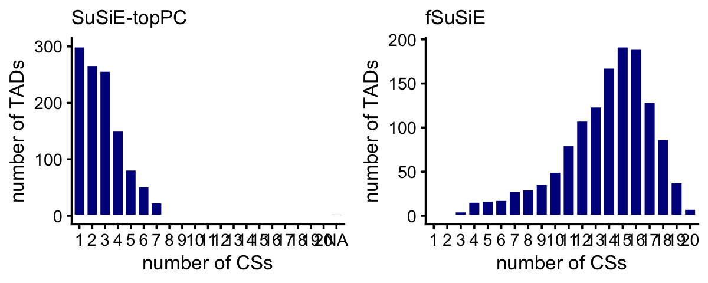

Examine ROSMAP methylation fine-mapping results
William Denault, Hao Sun, Angjing Liu, Peter Carbonetto, Gao Wang
Last updated: 2025-05-14
Checks: 6 1
Knit directory:
fsusie-experiments/analysis/
This reproducible R Markdown analysis was created with workflowr (version 1.7.1). The Checks tab describes the reproducibility checks that were applied when the results were created. The Past versions tab lists the development history.
Great! Since the R Markdown file has been committed to the Git repository, you know the exact version of the code that produced these results.
Great job! The global environment was empty. Objects defined in the global environment can affect the analysis in your R Markdown file in unknown ways. For reproduciblity it’s best to always run the code in an empty environment.
The command set.seed(1) was run prior to running the
code in the R Markdown file. Setting a seed ensures that any results
that rely on randomness, e.g. subsampling or permutations, are
reproducible.
Great job! Recording the operating system, R version, and package versions is critical for reproducibility.
- flag-duplicated-cs
To ensure reproducibility of the results, delete the cache directory
rosmap_overview_cache and re-run the analysis. To have
workflowr automatically delete the cache directory prior to building the
file, set delete_cache = TRUE when running
wflow_build() or wflow_publish().
Great job! Using relative paths to the files within your workflowr project makes it easier to run your code on other machines.
Great! You are using Git for version control. Tracking code development and connecting the code version to the results is critical for reproducibility.
The results in this page were generated with repository version 14bc901. See the Past versions tab to see a history of the changes made to the R Markdown and HTML files.
Note that you need to be careful to ensure that all relevant files for
the analysis have been committed to Git prior to generating the results
(you can use wflow_publish or
wflow_git_commit). workflowr only checks the R Markdown
file, but you know if there are other scripts or data files that it
depends on. Below is the status of the Git repository when the results
were generated:
Untracked files:
Untracked: analysis/rosmap_h3k27ac_cache/
Untracked: analysis/rosmap_overview_cache/
Untracked: data/afreq.RData
Untracked: data/analysis_result/Fungen_xQTL.ENSG00000163808.cis_results_db.export.rds
Untracked: data/analysis_result/ROSMAP_haQTL.chr3_43915257_48413435.fsusie_mixture_normal_top_pc_weights.rds
Untracked: data/analysis_result/ROSMAP_mQTL.chr3_43915257_48413435.fsusie_mixture_normal_top_pc_weights.rds
Untracked: outputs/CASS4_all_effects.RData
Untracked: outputs/CASS4_obj.RData
Untracked: outputs/CD2AP_all_effects.RData
Untracked: outputs/CD2AP_obj.RData
Untracked: outputs/CR1_CR2_all_effects.RData
Untracked: outputs/CR1_CR2_obj.RData
Untracked: outputs/ROSMAP_DLPFC_mega_eQTL.cs_only.tsv.gz
Untracked: outputs/ROSMAP_DLPFC_pQTL.cs_only.tsv.gz
Untracked: outputs/ROSMAP_haQTL_cs_effect_ha_peak_annotation.tsv.gz
Untracked: outputs/ROSMAP_haQTL_cs_snp_annotation.tsv.gz
Untracked: outputs/ROSMAP_haQTL_cs_snp_toppc1_annotation.tsv.gz
Untracked: outputs/ROSMAP_haQTL_qtl_snp_qval0.05.tsv.gz
Untracked: outputs/ROSMAP_haQTL_qtl_snp_qval0.05_annotation.tsv.gz
Untracked: outputs/ROSMAP_mQTL_cs_effect_cpg_annotation.tsv.gz
Untracked: outputs/ROSMAP_mQTL_cs_snp_annotation.tsv.gz
Untracked: outputs/ROSMAP_mQTL_cs_snp_toppc1_annotation.tsv.gz
Untracked: outputs/ROSMAP_mQTL_qtl_snp_qval0.05.tsv.gz
Untracked: outputs/ROSMAP_mQTL_qtl_snp_qval0.05_annotation.tsv.gz
Note that any generated files, e.g. HTML, png, CSS, etc., are not included in this status report because it is ok for generated content to have uncommitted changes.
These are the previous versions of the repository in which changes were
made to the R Markdown (analysis/rosmap_overview.Rmd) and
HTML (docs/rosmap_overview.html) files. If you’ve
configured a remote Git repository (see ?wflow_git_remote),
click on the hyperlinks in the table below to view the files as they
were in that past version.
| File | Version | Author | Date | Message |
|---|---|---|---|---|
| Rmd | 14bc901 | Peter Carbonetto | 2025-05-14 | wflow_publish("rosmap_overview.Rmd", verbose = TRUE, view = FALSE) |
| Rmd | 387295e | Peter Carbonetto | 2025-05-14 | A few improvements to the CpG-mSNP distance plot in the rosmap_overview analysis. |
| Rmd | fe030b0 | Peter Carbonetto | 2025-05-14 | A bunch of revisions to the rosmap_overview analysis. |
| Rmd | 3e1d8ab | Peter Carbonetto | 2025-05-14 | Updated distance-to-TSS plot in rosmap_overview analysis. |
| Rmd | 31d4931 | Peter Carbonetto | 2025-05-14 | Revised blacklisting steps in the rosmap_overview analysis. |
| Rmd | 0ed2a67 | Peter Carbonetto | 2025-05-14 | Revised blacklisting step in rosmap_overview.Rmd. |
| Rmd | 4a1285d | Peter Carbonetto | 2025-05-14 | Added step to rosmap_overview to filter the results by MAF. |
| Rmd | 215a994 | Peter Carbonetto | 2025-05-13 | Overhauling rosmap_overview.Rmd. |
| Rmd | 392f166 | Peter Carbonetto | 2025-05-13 | Added haSNP-peak histogram to the rosmap_h3k27ac analysis. |
| Rmd | 09385ee | Peter Carbonetto | 2025-05-13 | Working on adding affected peak results to the rosmap_h3k27ac analysis; also added a step to remove duplicated CSs from peak-level results for fSuSiE as well as a MAF filtering step for the SNP-peak association testing results. |
| Rmd | 69dcefa | Peter Carbonetto | 2025-05-13 | Added steps to the rosmap_h3k27ac analysis to load the peak-level results and apply the MAF filter to them. |
| Rmd | 890a515 | Peter Carbonetto | 2025-05-13 | Added tables to the rosmap_h3k27ac analysis showing the distribution of PIPs in the 1-SNP CSs. |
| Rmd | acd259e | Peter Carbonetto | 2025-05-13 | Added TSS plot to rosmap_h3k27ac analysis. |
| Rmd | 1c5ff9e | Peter Carbonetto | 2025-05-13 | Added step to remove duplicate CSs and added CS size histograms to rosmap_h3k27ac analysis. |
| Rmd | 9a0d3ab | Peter Carbonetto | 2025-05-13 | Added plots to rosmap_h3k27ac analysis comparing discovery of CSs in TADs. |
| Rmd | e6480b7 | Peter Carbonetto | 2025-05-13 | Added steps to rosmap_h3k27ac analysis to load gene data, allele frequency data, and fine-mapping results. |
| Rmd | ed237c6 | Peter Carbonetto | 2025-05-13 | Started new analysis rosmap_h3k27ac.Rmd. |
| Rmd | 0920fa2 | Peter Carbonetto | 2025-05-02 | Added the effect plot to pip_zoomout_cass4.pdf. |
| Rmd | ba346e7 | Peter Carbonetto | 2025-05-01 | Fixed a typo in rosmap_overview.Rmd. |
| Rmd | 4c5e1a0 | Peter Carbonetto | 2025-04-30 | Small edit to rosmap_overview.Rmd. |
| html | 4adf2dd | Peter Carbonetto | 2025-04-29 | Implemented exploratory analysis script fsusie_illumina450k.R. |
| Rmd | 524bd60 | Peter Carbonetto | 2025-04-26 | Added short note to rosmap_overview.Rmd. |
| Rmd | d651761 | Peter Carbonetto | 2025-04-25 | A few small fixes to the rosmap_overview analysis. |
| Rmd | 3b385be | Peter Carbonetto | 2025-04-25 | Fixed a couple of bugs in rosmap_overview.Rmd. |
| Rmd | 748b8b0 | Peter Carbonetto | 2025-04-25 | Added more detailed analysis of the 1-SNP CSs for methylation in rosmap_overview.Rmd. |
| Rmd | 9dad9a9 | Peter Carbonetto | 2025-04-24 | Working on additional steps to identify and remove blacklisted mSNPs. |
| html | dade7d2 | Peter Carbonetto | 2025-04-16 | Ran workflowr::wflow_publish("rosmap_overview.Rmd"). |
| Rmd | 14e4487 | Peter Carbonetto | 2025-04-16 | Updated the plot in rosmap_overview.Rmd showing num. peaks vs. num. CSs for fSusiE H3K27ac results. |
| Rmd | 1fd676e | Peter Carbonetto | 2025-04-16 | Added step to rosmap_overview analysis to remove duplicate CSs for H3K27ac. |
| Rmd | cdc55a2 | Peter Carbonetto | 2025-04-16 | Fixed histogram showing no. cpgs vs. no. CSs in rosmap_overview.Rmd. |
| Rmd | 2c0d574 | Peter Carbonetto | 2025-04-16 | Small fix to the CS size histograms for the methylation results in rosmap_overview.Rmd. |
| Rmd | e1fe364 | Peter Carbonetto | 2025-04-04 | I have the CD2AP zoom-in plot mostly done except for the panel showing the raw data (beta values). |
| Rmd | 46d0b35 | Peter Carbonetto | 2025-04-04 | Removed some code in the rosmap_overview.Rmd analysis into a separate code chunk. |
| Rmd | 9416011 | Peter Carbonetto | 2025-04-04 | Added function create_cs_maps() to help remove ‘duplicated’ CSs. |
| Rmd | 618cae4 | Peter Carbonetto | 2025-04-03 | A few fixes to the CR1 eQTL panel. |
| html | 618cae4 | Peter Carbonetto | 2025-04-03 | A few fixes to the CR1 eQTL panel. |
| html | 3bb4ba0 | Peter Carbonetto | 2025-03-28 | Ran wflow_publish("rosmap_overview.Rmd"). |
| Rmd | dcece5b | Peter Carbonetto | 2025-03-28 | Added code chunks to rosmap_overview.Rmd to save some more plots to PDF. |
| Rmd | a70588c | Peter Carbonetto | 2025-03-28 | Added code chunks to rosmap_overview.Rmd to save a couple plots to PDFs. |
| html | c079568 | Peter Carbonetto | 2025-03-27 | Ran wflow_publish("rosmap_overview.Rmd"). |
| Rmd | 2bd0de3 | Peter Carbonetto | 2025-03-27 | wflow_publish("rosmap_overview.Rmd", verbose = TRUE, view = FALSE) |
| Rmd | 53d4a33 | Peter Carbonetto | 2025-03-27 | Added code chunks to rosmap_overview.Rmd for generating PDFs of some of the plots. |
| Rmd | d5c9e37 | Peter Carbonetto | 2025-03-27 | A few fixes to rosmap_overview.Rmd. |
| Rmd | 544235d | Peter Carbonetto | 2025-03-27 | Added code chunks to save some of the plots in the rosmap_overview analysis. |
| html | aece910 | Peter Carbonetto | 2025-03-24 | Ran workflowr::wflow_publish("rosmap_overview.Rmd"). |
| Rmd | 0eb8295 | Peter Carbonetto | 2025-03-24 | wflow_publish("rosmap_overview.Rmd", view = FALSE, verbose = TRUE) |
| Rmd | 6de898e | Peter Carbonetto | 2025-03-24 | Added plots to the rosmap_overview analysis summarizing the recovery of affected H3K27ac peaks. |
| Rmd | 7c8d51d | Peter Carbonetto | 2025-03-24 | Added TSS plot for H3K27ac in rosmap_overview analysis. |
| Rmd | 8e17486 | Peter Carbonetto | 2025-03-24 | Added code to create a plot showing the density of causal SNPs near the closest TSS. |
| Rmd | 18c11b5 | Peter Carbonetto | 2025-03-24 | Added code to rosmap_overview.Rmd to load gene annotations. |
| Rmd | 60bbe23 | Peter Carbonetto | 2025-03-22 | Added a couple notes to the rosmap_summary analysis. |
| Rmd | 00bb89c | Peter Carbonetto | 2025-03-21 | Added note to rosmap_overview.Rmd. |
| Rmd | 7adfd4d | Peter Carbonetto | 2025-03-21 | A few fixes to the rosmap_overview analysis. |
| Rmd | c087a58 | Peter Carbonetto | 2025-03-21 | Added some notes to the rosmap_overview analysis. |
| Rmd | 5e9432b | Peter Carbonetto | 2025-03-21 | Added plots to the rosmap_overview analysis summarizing the affected CpGs identified by fSuSiE and the association tests. |
| Rmd | 593c7e0 | Peter Carbonetto | 2025-03-21 | Added some code for analyzing the HA peak results in the rosmap_overview analysis. |
| Rmd | 12ed0b1 | Peter Carbonetto | 2025-03-21 | Small fix. |
| Rmd | e663ab0 | Peter Carbonetto | 2025-03-21 | Added code to read in HA_peak results in rosmap_overview analysis. |
| html | 71954f1 | Peter Carbonetto | 2025-03-20 | Added plots summarizing H3K27ac results to rosmap_overview analysis. |
| Rmd | 1ad355a | Peter Carbonetto | 2025-03-20 | wflow_publish("rosmap_overview.Rmd", view = FALSE, verbose = TRUE) |
| html | c84e5c0 | Peter Carbonetto | 2025-03-20 | Rebuilt the rosmap_overview analysis with the new results. |
| Rmd | 1c8eeb7 | Peter Carbonetto | 2025-03-20 | wflow_publish("rosmap_overview.Rmd", view = FALSE) |
| Rmd | acfadd1 | Peter Carbonetto | 2025-03-20 | Made a few improvements to the code and text of the rosmap_analysis. |
| Rmd | c102af9 | Peter Carbonetto | 2025-03-20 | Added a scatterplot comparing number of CSs per TAD (susie vs. fsusie). |
| Rmd | 12f2fd3 | Peter Carbonetto | 2025-03-20 | Added some histograms on TAD CS sizes. |
| Rmd | c69e187 | Peter Carbonetto | 2025-03-20 | Created plot showing TAD sizes from the methylation fine-mapping results. |
| Rmd | 2a5c706 | Peter Carbonetto | 2025-03-20 | Added code to the rosmap_overview analysis to load the methylation SNP results. |
| Rmd | c3a01c7 | Peter Carbonetto | 2025-03-20 | Added link for downloading data to rosmap_overview analysis. |
| html | 5c446c0 | Peter Carbonetto | 2025-03-20 | First build of the rosmap_overview analysis. |
| Rmd | 7532908 | Peter Carbonetto | 2025-03-20 | workflowr::wflow_publish("rosmap_overview.Rmd", verbose = TRUE) |
| Rmd | bc6d0a1 | Peter Carbonetto | 2025-03-20 | Started working on rosmap_overview analysis. |
Note: If you would like to run this analysis on your computer, you will first need to download the fine-mapping outputs. They can be downloaded from here. Once you have downloaded the files, copy each file to the “data” or “outputs” subdirectory.
Load some packages and custom functions used in the code below:
library(data.table)
library(dplyr)
library(ggplot2)
library(cowplot)
source("../code/rosmap_functions_more.R")Load the gene annotations used in some of the analyses below.
gene_file <-
file.path("../data/genome_annotations",
"Homo_sapiens.GRCh38.103.chr.reformatted.collapse_only.gene.gtf.gz")
genes <- get_gene_annotations(gene_file)Load the allele frequencies computed by PLINK:
load("../data/afreq.RData")Next I load methylation SNP results generated by SuSiE-topPC, fSuSiE and the SNP-CpG association testing:
assoc_file <- "../outputs/ROSMAP_mQTL_qtl_snp_qval0.05.tsv.gz"
snps_susie_file <- "../outputs/ROSMAP_mQTL_cs_snp_toppc1_annotation.tsv.gz"
snps_fsusie_file <- "../outputs/ROSMAP_mQTL_cs_snp_annotation.tsv.gz"
snps_susie <- read_enrichment_results(snps_susie_file,n = 6)
snps_fsusie <- read_enrichment_results(snps_fsusie_file,n = 7)
assoc <- read_enrichment_results(assoc_file,n = 8)
snps_susie <- snps_susie[1:6]
snps_fsusie <- snps_fsusie[1:7]
snps_susie$region <-
sapply(strsplit(snps_susie$cs,":",fixed = TRUE),"[[",2)
snps_susie <- transform(snps_susie,
region = factor(region),
cs = factor(cs),
pc = factor(pc))
snps_fsusie <- transform(snps_fsusie,
cs = factor(cs),
region = factor(region),
study = factor(study))Add the allele frequencies to the methylation fine-mapping results:
ids <- with(snps_susie,paste(chr,pos,sep = "_"))
rows <- match(ids,afreq$id)
snps_susie$maf <- afreq[rows,"maf"]
ids <- with(snps_fsusie,paste(chr,pos,sep = "_"))
rows <- match(ids,afreq$id)
snps_fsusie$maf <- afreq[rows,"maf"]Also load the CpG-level results generated by fSuSiE:
cpg_fsusie_file <- "../outputs/ROSMAP_mQTL_cs_effect_cpg_annotation.tsv.gz"
cpgs_fsusie <- read_enrichment_results(cpg_fsusie_file,n = 9)
cpgs_fsusie <- cpgs_fsusie[1:9]
cpgs_fsusie$region <- sapply(strsplit(cpgs_fsusie$cs,":",fixed = TRUE),"[[",2)
cpgs_fsusie <- transform(cpgs_fsusie,
cs = factor(cs),
region = factor(region),
context = factor(context))Keep only CSs if the MAF of the sentinel SNP is >5%:
keep <- tapply(snps_susie[c("pip","maf")],snps_susie$cs,
function (x) x[which.max(x$pip),"maf"] >= 0.05)
keep_cs <- names(which(keep))
snps_susie <- subset(snps_susie,is.element(cs,keep_cs))
snps_susie <- transform(snps_susie,
region = factor(region),
cs = factor(cs))
keep <- tapply(snps_fsusie[c("pip","maf")],snps_fsusie$cs,
function (x) x[which.max(x$pip),"maf"] >= 0.05)
keep_cs <- names(which(keep))
snps_fsusie <- subset(snps_fsusie,is.element(cs,keep_cs))
snps_fsusie <- transform(snps_fsusie,
region = factor(region),
cs = factor(cs))Apply this same MAF filter to the SNP-CpG association tests and the fSuSiE CpG-level results:
ids <- with(assoc,paste(chr,pos,sep = "_"))
rows <- match(ids,afreq$id)
assoc$maf <- afreq[rows,"maf"]
assoc <- subset(assoc,maf >= 0.05)
cpgs_fsusie <- subset(cpgs_fsusie,is.element(cs,keep_cs))
cpgs_fsusie <- transform(cpgs_fsusie,
region = factor(region),
cs = factor(cs))Let’s now get an overview of the TADs. This is the number of fine-mapping regions (TADs) that contained at least one CS in each of the analyses:
nlevels(snps_susie$region)
nlevels(snps_fsusie$region)
# [1] 1145
# [1] 1327This plot summarizes the sizes of the TADs that were analyzed by SuSiE-topPC and fSuSiE:
plot_tad_sizes <- function (tads) {
tad_size <- get_tad_sizes(tads)
pdat <- data.frame(tad_size = tad_size)
return(ggplot(pdat,aes(x = tad_size)) +
geom_histogram(color = "white",fill = "black",bins = 48) +
labs(x = "size (Mb)",y = "number of TADs") +
theme_cowplot(font_size = 10))
}
tads <- levels(snps_fsusie$region)
p <- plot_tad_sizes(tads) +
scale_x_continuous(limits = c(2,9),breaks = 1:10) +
scale_y_continuous(breaks = seq(0,100,10))
print(p)Some other useful statistics on the TAD sizes:
tad_size <- get_tad_sizes(tads)
length(tad_size)
range(tad_size)
mean(tad_size)
median(tad_size)
sum(tad_size > 9)
# [1] 1327
# [1] 2.320952 34.727189
# [1] 4.54465
# [1] 4.154266
# [1] 19There are some technical concerns about fine-mapping mSNPs that overlap with CpGs, so these SNPs (and the CSs that include these SNPs) should be removed from the results.
For the SNP-CpG association tests, it turns out that there are no SNPs to “blacklist”:
sum(with(assoc,pos == molecular_trait_id_pos))
# [1] 0Now identify the blacklisted mSNPs as the mSNPs that have the same position as a CpG (I will use both “peak start” and “peak end”):
ids_snp <- c(with(snps_susie,paste(chr,pos,sep = "_")),
with(snps_fsusie,paste(chr,pos,sep = "_")))
ids_cpg <- with(cpgs_fsusie,
c(paste(chr,peak_start,sep = "_"),
paste(chr,peak_end,sep = "_")))
blacklisted_ids <- intersect(ids_snp,ids_cpg)Now remove all SuSiE and fSuSiE CSs containing one or more blacklisted SNPs:
ids <- with(snps_susie,paste(chr,pos,sep = "_"))
rows <- which(is.element(ids,blacklisted_ids))
blacklisted_cs <- unique(snps_susie[rows,]$cs)
snps_susie <- subset(snps_susie,!is.element(cs,blacklisted_cs))
ids <- with(snps_fsusie,paste(chr,pos,sep = "_"))
rows <- which(is.element(ids,blacklisted_ids))
blacklisted_cs <- unique(snps_fsusie[rows,]$cs)
snps_fsusie <- subset(snps_fsusie,!is.element(cs,blacklisted_cs))
snps_susie <- transform(snps_susie,cs = factor(cs))
snps_fsusie <- transform(snps_fsusie,cs = factor(cs))These histograms summarize the number of CSs per TAD:
pdat1 <- get_cs_vs_tad_size(snps_susie)
pdat2 <- get_cs_vs_tad_size(snps_fsusie)
pdat1 <- transform(pdat1,num_cs = factor(num_cs,1:20))
pdat2 <- transform(pdat2,num_cs = factor(num_cs,1:20))
p1 <- ggplot(pdat1,aes(x = num_cs)) +
geom_histogram(stat = "count",color = "white",fill = "darkblue") +
scale_x_discrete(drop = FALSE) +
labs(x = "number of CSs",y = "number of TADs",title = "SuSiE-topPC") +
theme_cowplot(font_size = 10) +
theme(plot.title = element_text(size = 10,face = "plain"))
p2 <- ggplot(pdat2,aes(x = num_cs)) +
geom_histogram(stat = "count",color = "white",fill = "darkblue") +
scale_x_discrete(drop = FALSE) +
labs(x = "number of CSs",y = "number of TADs",title = "fSuSiE") +
theme_cowplot(font_size = 10) +
theme(plot.title = element_text(size = 10,face = "plain"))
plot_grid(p1,p2,nrow = 1,ncol = 2)
Compare discovery of causal SNPs (number of CSs) in the SuSiE-topPC and fSuSiE analyses:
dat1 <- get_cs_vs_tad_size(snps_susie)
dat2 <- get_cs_vs_tad_size(snps_fsusie)
dat1 <- dat1[c(1,3)]
dat2 <- dat2[c(1,3)]
names(dat1) <- c("tad","num_cs_susie")
names(dat2) <- c("tad","num_cs_fsusie")
dat <- merge(dat1,dat2,all = TRUE)
rows <- which(is.na(dat$num_cs_susie))
dat[rows,"num_cs_susie"] <- 0
pdat <- melt(with(dat,table(num_cs_susie,num_cs_fsusie)))
rows <- which(pdat$value == 0)
pdat[rows,"value"] <- NA
p <- ggplot(pdat,aes(x = num_cs_susie,y = num_cs_fsusie,size = value)) +
geom_point(color = "white",fill = "darkblue",shape = 21) +
geom_abline(intercept = 0,slope = 1,color = "black",linetype = "dotted") +
scale_x_continuous(breaks = seq(0,20,2),limits = c(0,20)) +
scale_y_continuous(breaks = seq(0,20,2),limits = c(0,20)) +
scale_size(breaks = c(1,5,10,50,100)) +
labs(x = "SuSiE-topPC",y = "fSuSiE",size = "number of TADs") +
theme_cowplot(font_size = 10)
print(p)Flag the “duplicate” CSs:
root_cs_susie <- create_cs_maps(snps_susie)$root
root_cs_fsusie <- create_cs_maps(snps_fsusie)$root
Warning: The above code chunk cached its results, but
it won’t be re-run if previous chunks it depends on are updated. If you
need to use caching, it is highly recommended to also set
knitr::opts_chunk$set(autodep = TRUE) at the top of the
file (in a chunk that is not cached). Alternatively, you can customize
the option dependson for each individual chunk that is
cached. Using either autodep or dependson will
remove this warning. See the
knitr cache options for more details.
Then remove the duplicate CSs:
snps_susie <- subset(snps_susie,is.element(cs,root_cs_susie))
snps_fsusie <- subset(snps_fsusie,is.element(cs,root_cs_fsusie))
snps_susie <- transform(snps_susie,cs = factor(cs))
snps_fsusie <- transform(snps_fsusie,cs = factor(cs))Also remove the duplicate CSs from the fSuSiE CpG-level results:
nodup_cs <- levels(snps_fsusie$cs)
cpgs_fsusie <- subset(cpgs_fsusie,is.element(cs,nodup_cs))
cpgs_fsusie <- transform(cpgs_fsusie,cs = factor(cs))Compare the sizes of the CSs in the SuSiE-topPC and fSuSiE analyses:
bins <- c(0,1,2,5,10,20,Inf)
snps_susie <- transform(snps_susie,cs = factor(cs))
snps_fsusie <- transform(snps_fsusie,cs = factor(cs))
cs_size_susie <- as.numeric(table(snps_susie$cs))
cs_size_fsusie <- as.numeric(table(snps_fsusie$cs))
cs_size_susie <- cut(cs_size_susie,bins)
cs_size_fsusie <- cut(cs_size_fsusie,bins)
levels(cs_size_susie) <- bins[-1]
levels(cs_size_fsusie) <- bins[-1]
p1 <- ggplot(data.frame(cs_size = cs_size_susie),aes(x = cs_size)) +
geom_histogram(stat = "count",color = "white",fill = "darkblue",
width = 0.65) +
labs(x = "CS size",y = "number of CSs",title = "SuSiE-topPC") +
theme_cowplot(font_size = 10) +
theme(plot.title = element_text(size = 10,face = "plain"))
p2 <- ggplot(data.frame(cs_size = cs_size_fsusie),aes(x = cs_size)) +
geom_histogram(stat = "count",color = "white",fill = "darkblue",
width = 0.65) +
scale_y_continuous(breaks = seq(0,1e4,2000)) +
labs(x = "CS size",y = "number of CSs",title = "fSuSiE") +
theme_cowplot(font_size = 10) +
theme(plot.title = element_text(size = 10,face = "plain"))
plot_grid(p1,p2,nrow = 1,ncol = 2)Here are the exact numbers:
table(cs_size_susie)
table(cs_size_fsusie)
# cs_size_susie
# 1 2 5 10 20 Inf
# 328 156 343 327 348 650
# cs_size_fsusie
# 1 2 5 10 20 Inf
# 6355 1683 1658 766 417 248We expect that most of the causal SNPs to be very close to the nearest TSS. Let’s check this. This will involve a couple of intermediate calculations.
snps_assoc <- get_top_snp_per_location(assoc)
snps_assoc <- add_min_dist_to_tss(snps_assoc,genes)
snps_susie <- add_min_dist_to_tss(snps_susie,genes)
snps_fsusie <- add_min_dist_to_tss(snps_fsusie,genes)For SuSiE-topPC and fSuSiE, we calculate “weighted” counts of SNPs, in which the weights are given by the PIPs.
bin_size <- 10000
bins <- c(-Inf,seq(-2e5,2e5,bin_size),Inf)
bins <- bins + bin_size/2
counts_assoc <- as.numeric(table(cut(snps_assoc$min_dist_to_tss,bins)))
counts_susie <- tapply(snps_susie$pip,
cut(snps_susie$min_dist_to_tss,bins),
function (x) sum(x,na.rm = TRUE))
counts_fsusie <- tapply(snps_fsusie$pip,
cut(snps_fsusie$min_dist_to_tss,bins),
function (x) sum(x,na.rm = TRUE))Now we can plot the result:
n <- length(bins)
i <- seq(2,n-2)
bin_centers <- bins[i] + bin_size/2
counts_assoc <- counts_assoc[i]
counts_susie <- counts_susie[i]
counts_fsusie <- counts_fsusie[i]
counts_assoc <- counts_assoc/sum(counts_assoc)
counts_susie <- counts_susie/sum(counts_susie)
counts_fsusie <- counts_fsusie/sum(counts_fsusie)
pdat <- data.frame(method = rep(c("assoc","susie","fsusie"),
each = length(bin_centers)),
dist = rep(bin_centers/1000,times = 3),
freq = c(counts_assoc,counts_susie,counts_fsusie),
stringsAsFactors = TRUE)
p <- ggplot(pdat,aes(x = dist,y = freq,color = method)) +
geom_line(linewidth = 0.5) +
geom_point(size = 1) +
scale_x_continuous(breaks = seq(-200,200,50)) +
scale_y_continuous(breaks = seq(0,1,0.05)) +
scale_color_manual(values = c("darkblue","darkorange","dodgerblue")) +
labs(x = "distance to TSS (kb)",y = "proportion of SNPs") +
theme_cowplot(font_size = 10)
print(p)Now let’s look closely at the 1-SNP CSs.
cs1snp_susie <- table(snps_susie$cs)
cs1snp_susie <- names(cs1snp_susie)[cs1snp_susie == 1]
cs1snp_susie <- subset(snps_susie,is.element(cs,cs1snp_susie))
cs1snp_fsusie <- table(snps_fsusie$cs)
cs1snp_fsusie <- names(cs1snp_fsusie)[cs1snp_fsusie == 1]
cs1snp_fsusie <- subset(snps_fsusie,is.element(cs,cs1snp_fsusie))Many of the PIPs in the 1-SNP CSs are 1 or very close to 1:
table(cut(1 - cs1snp_susie$pip,c(0,0.0001,0.001,0.01,1)))
table(cut(1 - cs1snp_fsusie$pip,c(0,0.0001,0.001,0.01,1)))
#
# (0,0.0001] (0.0001,0.001] (0.001,0.01] (0.01,1]
# 122 33 59 77
#
# (0,0.0001] (0.0001,0.001] (0.001,0.01] (0.01,1]
# 1989 477 638 638Now let’s turn to the recovery of affected CpGs.
Counting the number of CpGs per TAD is quite simple from the way the fSuSiE results were compiled. It involves counting the number of unique CpGs in each TAD:
cpgs_per_tad_fsusie <-
with(cpgs_fsusie,tapply(ID,region,function (x) length(unique(x))))Counting the number of CpGs per TAD from the SNP-CpG association tests is a little more complicated because the CpGs were not assigned to TADs in the results.
tads <- get_tad_info(levels(cpgs_fsusie$region))
cpgs_per_tad_assoc <- count_features_per_tad(assoc,tads)These plots summarize the number of affected CpGs per TAD:
cpgs_per_tad_assoc[cpgs_per_tad_assoc == 0] <- NA
cpgs_per_tad_fsusie[cpgs_per_tad_fsusie == 0] <- NA
pdat1 <- data.frame(x = cpgs_per_tad_assoc)
pdat2 <- data.frame(x = cpgs_per_tad_fsusie)
p1 <- ggplot(pdat1,aes(x = x)) +
geom_histogram(color = "white",fill = "darkblue",bins = 64) +
xlim(0,2000) +
labs(x = "number of CpGs",y = "number of TADs",
title = "SNP-CpG association tests") +
theme_cowplot(font_size = 10) +
theme(plot.title = element_text(size = 10,face = "plain"))
p2 <- ggplot(pdat2,aes(x = x)) +
geom_histogram(color = "white",fill = "darkblue",bins = 64) +
xlim(0,2000) +
labs(x = "number of CpGs",y = "number of TADs",title = "fSuSiE") +
theme_cowplot(font_size = 10) +
theme(plot.title = element_text(size = 10,face = "plain"))
plot_grid(p1,p2,nrow = 1,ncol = 2)
| Version | Author | Date |
|---|---|---|
| aece910 | Peter Carbonetto | 2025-03-24 |
A small number of TADs have more than 2,000 affected CpGs:
sum(cpgs_per_tad_assoc > 2000,na.rm = TRUE)
sum(cpgs_per_tad_fsusie > 2000,na.rm = TRUE)
# [1] 13
# [1] 5This plot compares the number of affected CpGs identified by fSuSiE and the SNP-CpG association tests:
pdat <- data.frame(assoc = cpgs_per_tad_assoc,
fsusie = cpgs_per_tad_fsusie)
p <- ggplot(pdat,aes(x = assoc,y = fsusie)) +
geom_point(color = "darkblue") +
geom_abline(intercept = 0,slope = 1,color = "magenta",linetype = "dotted") +
labs(x = "SNP-CpG association tests",y = "fSusiE") +
xlim(0,4100) +
ylim(0,4100) +
theme_cowplot(font_size = 10)
print(p)
| Version | Author | Date |
|---|---|---|
| aece910 | Peter Carbonetto | 2025-03-24 |
One advantage of fSuSiE is that it is able to tell us which molecular features are affected by which SNPs, and therefore it provides a more coherent summary of how the SNPs affect methylation levels at a locus. To examine this quantitatively, we compare the number of affected CpGs per CS for fSuSiE to the number of affected CpGs per SNP from the association tests. The result is much fewer CSs and many more affected CpGs per CS:
x <- factor(assoc$variant_id)
cpgs_per_snp_assoc <- tapply(assoc$molecular_trait_id,x,
function (x) length(unique(x)))
rm(x)
cpgs_per_snp_fsusie <-
with(cpgs_fsusie,tapply(ID,cs,function (x) length(unique(x))))
pdat1 <- data.frame(x = cpgs_per_snp_assoc)
pdat2 <- data.frame(x = cpgs_per_snp_fsusie)
pdat1 <- subset(pdat1,x <= 25)
pdat2 <- subset(pdat2,x <= 150)
p1 <- ggplot(pdat1,aes(x = x)) +
geom_histogram(color = "white",fill = "darkblue",bins = 25) +
labs(x = "number of CpGs",y = "number of SNPs",
title = "SNP-CpG association tests") +
theme_cowplot(font_size = 10) +
theme(plot.title = element_text(size = 10,face = "plain"))
p2 <- ggplot(pdat2,aes(x = x)) +
geom_histogram(color = "white",fill = "darkblue",bins = 25) +
labs(x = "number of CpGs",y = "number of CSs",title = "fSuSiE") +
theme_cowplot(font_size = 10) +
theme(plot.title = element_text(size = 10,face = "plain"))
plot_grid(p1,p2,nrow = 1,ncol = 2)
A small proportion of the SNPs and CSs are not plotted because they have an unusually large number of CpGs:
mean(cpgs_per_snp_assoc > 25)
mean(cpgs_per_snp_fsusie > 150)
# [1] 0.01052395
# [1] 0.02068903Finally, this plot shows the distribution of the distances between the mSNP and the nearest CpG affected by that SNP:
cpgs_fsusie_cs1snp <- subset(cpgs_fsusie,
is.element(cs,cs1snp_fsusie$cs))
rows <- match(cpgs_fsusie_cs1snp$cs,cs1snp_fsusie$cs)
cpgs_fsusie_cs1snp$variant_pos <- cs1snp_fsusie[rows,"pos"]
cpgs_fsusie_cs1snp <- transform(cpgs_fsusie_cs1snp,
cs = factor(cs),
dist = peak_start - variant_pos)
pdat <- tapply(cpgs_fsusie_cs1snp$dist,cpgs_fsusie_cs1snp$cs,
function (x) {
i <- which.min(abs(x))
return(x[i])
})
pdat <- data.frame(dist = pdat/1000)
p <- ggplot(subset(pdat,abs(dist) < 100),aes(x = dist)) +
geom_histogram(bins = 128,color = "tomato",fill = "tomato") +
labs(x = "CpG - mSNP pos. (kb)",
y = "number of mSNPs") +
theme_cowplot(font_size = 10)
print(p)
table(abs(pdat$dist) < 100)
#
# FALSE TRUE
# 256 6093
sessionInfo()
# R version 4.3.3 (2024-02-29)
# Platform: aarch64-apple-darwin20 (64-bit)
# Running under: macOS 15.4.1
#
# Matrix products: default
# BLAS: /Library/Frameworks/R.framework/Versions/4.3-arm64/Resources/lib/libRblas.0.dylib
# LAPACK: /Library/Frameworks/R.framework/Versions/4.3-arm64/Resources/lib/libRlapack.dylib; LAPACK version 3.11.0
#
# locale:
# [1] en_US.UTF-8/en_US.UTF-8/en_US.UTF-8/C/en_US.UTF-8/en_US.UTF-8
#
# time zone: America/Chicago
# tzcode source: internal
#
# attached base packages:
# [1] stats graphics grDevices utils datasets methods base
#
# other attached packages:
# [1] cowplot_1.1.3 ggplot2_3.5.0 dplyr_1.1.4 data.table_1.15.2
#
# loaded via a namespace (and not attached):
# [1] sass_0.4.9 utf8_1.2.4 generics_0.1.3 stringi_1.8.3
# [5] digest_0.6.34 magrittr_2.0.3 evaluate_1.0.3 grid_4.3.3
# [9] fastmap_1.1.1 plyr_1.8.9 R.oo_1.26.0 rprojroot_2.0.4
# [13] workflowr_1.7.1 jsonlite_1.8.8 R.utils_2.12.3 whisker_0.4.1
# [17] promises_1.2.1 fansi_1.0.6 scales_1.3.0 textshaping_0.3.7
# [21] jquerylib_0.1.4 cli_3.6.4 rlang_1.1.5 R.methodsS3_1.8.2
# [25] munsell_0.5.0 withr_3.0.2 cachem_1.0.8 yaml_2.3.8
# [29] tools_4.3.3 reshape2_1.4.4 colorspace_2.1-0 httpuv_1.6.14
# [33] vctrs_0.6.5 R6_2.5.1 lifecycle_1.0.4 git2r_0.33.0
# [37] stringr_1.5.1 fs_1.6.5 ragg_1.2.7 pkgconfig_2.0.3
# [41] pillar_1.9.0 bslib_0.6.1 later_1.3.2 gtable_0.3.4
# [45] glue_1.8.0 Rcpp_1.0.12 systemfonts_1.0.6 xfun_0.42
# [49] tibble_3.2.1 tidyselect_1.2.1 highr_0.10 knitr_1.45
# [53] farver_2.1.1 htmltools_0.5.8.1 labeling_0.4.3 rmarkdown_2.26
# [57] compiler_4.3.3